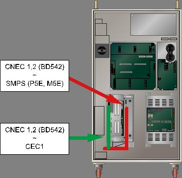
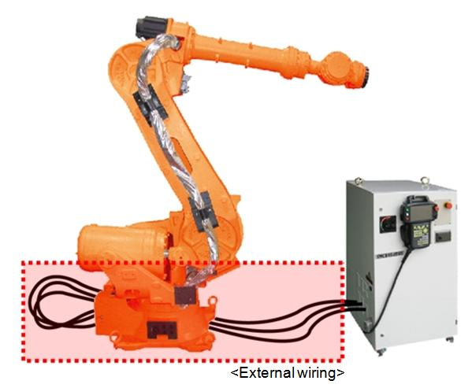
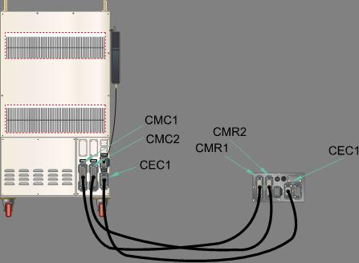
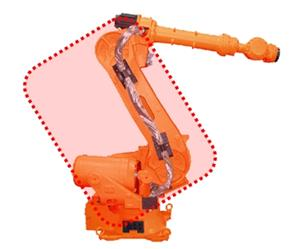
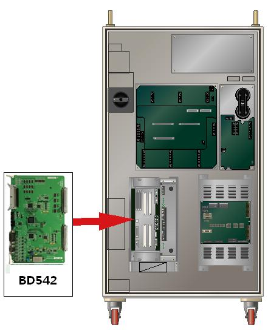
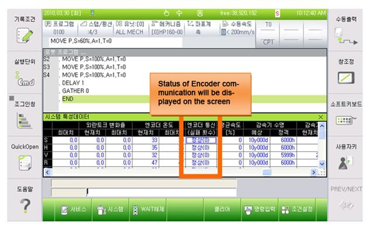

Previous error code: E0223 (¡Û axis) Encoder disconnected or communication failure
1.1.34.1. Outline
While the servo board receives the encoder data periodically through serial communication with the encoder to carry out the servo control of the motor, this error occurs because there is a communication failure and the count of the data received from the encoder violates the regulated value.
Mismatch in the count of the data received from the encoder could occur mainly because of a problem with the treatment of the wiring or the encoder shield line, causing the inflow of noise in the encoder signal line.
1.1.34.2. Causes and examine methods
|
(1) Check the encoder wiring
(2) Please replace the motor(encoder) and test it.
(3) Please replace the Servo Board and test it
(4) Please examine the communication status of wiring after the repair |
(1) Check the encoder wiring.
Encoder¡¯s wiring examination orders are as below.
Firstly, examine the loose contact of the connectors that are related to the Encoder¡¯s wiring.
Secondly, examine the short-circuit of encoder¡¯s wiring. Please use equipment such as the multi meter (tester) and examine each phase¡¯s wiring one by one.
Thirdly, replace the encoder¡¯s wiring and test it.
If the encoder¡¯s wiring has not been disconnected and if the error caused by certain problems (loose contact of shield line, contact between the encoder¡¯s signal line and other electric power line, or a contact with the metal part of Robot¡¯s main frame) it cannot be detected by short-circuit test. So please replace the wiring and test it.
n Please examine the internal wiring of the Controller
Please examine the wiring between the CNEC1, 2 (DB542) connector and the CEC1.

Figure 1.144 Checking the encoder wiring
n Please examine the wiring between the Controller and the Robot.
Please examine the wiring between the CNEC1 and the CER1.

Figure 1.145 Basic Installation Diagram of the Robot and Control Period

Figure 1.146 Connection between the Robot¡¯s manipulator and the Controller
n Please examine the wiring of the mainframe.
Please examine the wring between the CER1 and CNE1~6 (Encoder side¡¯s connector).
Please refer to the wiring diagram of Robot¡¯s maintenance manual.

Figure 1.147 Robot¡¯s Internal Wiring
(2) Please replace the motor(encoder) and test it.
If the error does not persist after the replacement of Servo Motor, Servo Motor is faulty. Please replace the Servo Motor with new one. Below diagram describes the locations of each axis¡¯s motor (HS165 Robot). For other Robot, please refer to the Robot¡¯s maintenance manual to replace it.
Figure 1.148 Locations of Each Axis¡¯s Motor (HS165 Robot)
(3) Please replace the Servo Board and test it.
After the replacement of the Servo Board, if the error does not persist, the Servo Board is faulty. Please replace the Servo Board with new one.

Figure 1.149 Replacing the servo board
(4) Please examine the communication status of wiring after the repair.
Once actions for the problem are taken, please refer to ¡ºCount of encoder communication failure display function manual¡» to check the communication status.

|
Count of communication failure |
Encoder¡¯s status |
Content |
|
0~2 |
Normal |
Normal status |
|
3~5 |
Examine required |
Wiring, encoder or the board need to be examined |
|
6~8 |
Warning |
Dangerous status. Robot may be immobilized |